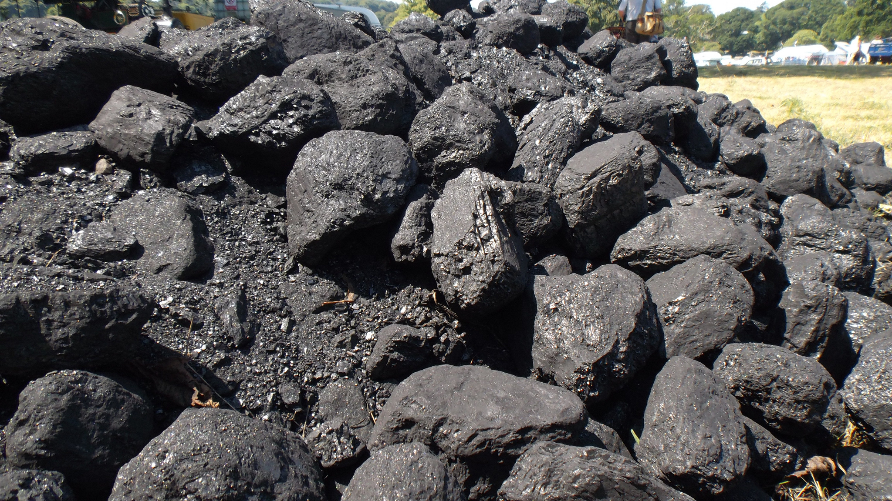
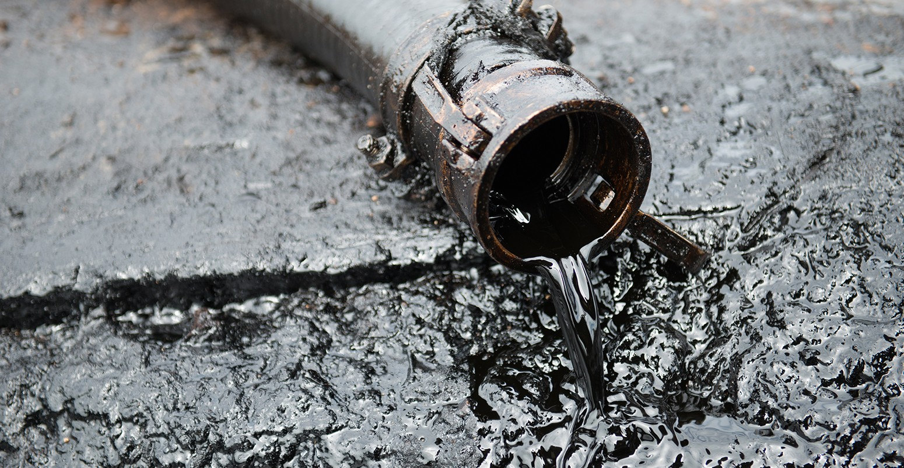
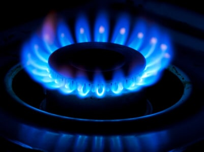

| What are Fossil Fuels |
| Environmental Impact |
| Common Gases Involved |
| Common Fossil Fuels |
Fossil Fuels
|
Someone might think that this isn’t a big deal, but releasing more greenhouse gasses into our atmosphere causes global warming and climate change. This problem impacts everyone around the world causing loss of clean water, good food, and loss of biodiversity and habitats for animals to live in. Not to mention the drastic temperature change over time. The average temperature gets higher and higher from year to year as the problem of using fossil fuels and producing greenhouse gasses gets worse and worse. Click here to go back up to the top |
|
|
There are very few things good about using fossil fuels. They are destroying the environment a lot quicker than one might think. They are also the primary cause of climate change by releasing greenhouse gasses into the environment.
They grow our carbon footprint exponentially everyday. The average American's carbon footprint is 16 tons every year. That’s the equivalent weight of about 21 farm cows or even 27 farm horses. That’s a pretty large amount for just one person in the United States. Take the 331.9 million people that live in the United States and multiply it by the 16 tons of carbon released every year. That means that just for the United States 5,310,400,000 tons of carbon fossil fuels are released into the atmosphere in one year. This is just for the United States. The average amount for everyone in the world is about 4 tons. This number takes into account poorer countries and richer countries and creates an average for everyone in the world. 4 tons of carbon fossil fuels is still a lot of carbon dioxide. If you take the 4 tons of carbon dioxide from one person and multiply that number by the 8.1 billion people in the world you get 32,400,000,000 or thirty two billion- four hundred million tons of carbon dioxide. So what? What does this number even mean? This carbon (and some other gasses) from us cause climate change which causes the average temperature to go up year after year. Causing the melting of the Arctic and rising oceans, and crops to need more water to survive, losing more clean water that we could use for drinking. Along with the loss of biodiversity and habits for animals. Click here to go back up to the top |
|---|
Click here to go back up to the top |
Most Common Fossil Fuels



Click here to go back up to the top |